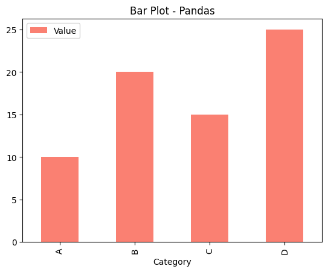
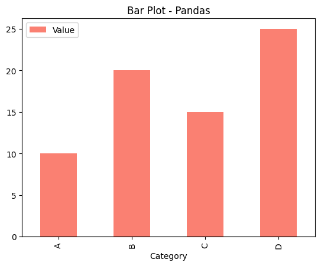
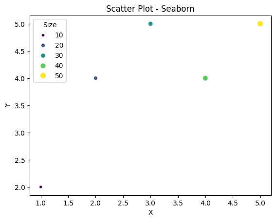
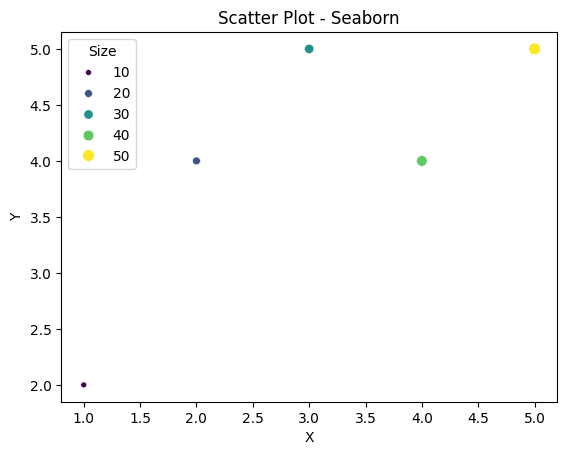
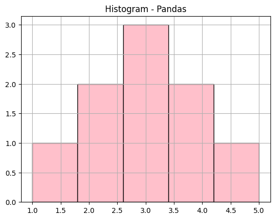
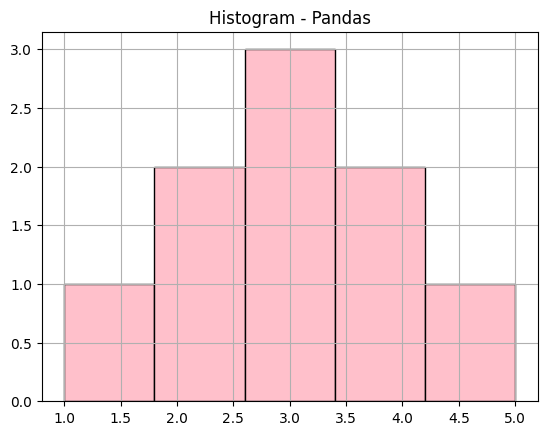

What is Data Visualization in Data Science?#
Data visualization is the graphical representation of data to reveal patterns, trends, outliers, and relationships that might not be obvious from raw numbers.
In data science, it serves two main purposes:
Exploratory Data Analysis (EDA): Understand the data before modeling.
Communication: Present findings to stakeholders clearly and persuasively.
1. Key Python Libraries for Data Visualization#
a. Matplotlib#
The foundational plotting library in Python.
Highly customizable, low-level control.
b. Seaborn#
Built on Matplotlib, provides a high-level interface.
Statistical plots with attractive defaults.
c. Plotly#
Interactive, web-based visualizations.
Great for dashboards and sharing online.
d. Pandas Plotting#
Built-in plotting methods for Series and DataFrames.
Quick and easy for basic plots.
2. Common Visualization Types and Methods#
Let’s explore the most common plots, their purposes, and how to create them.
📊 a. Bar Plots#
Use: Compare categorical data or discrete values.
Tools:
matplotlib,seaborn,pandas.
import pandas as pd
import matplotlib.pyplot as plt
import seaborn as sns
# Sample data
data = pd.DataFrame({
"Category": ["A", "B", "C", "D"],
"Value": [10, 20, 15, 25]
})
# Matplotlib Bar Plot
plt.bar(data["Category"], data["Value"], color="skyblue")
plt.title("Bar Plot - Matplotlib")
plt.xlabel("Category")
plt.ylabel("Value")
plt.show()
# Seaborn Bar Plot
sns.barplot(x="Category", y="Value", data=data, palette="muted")
plt.title("Bar Plot - Seaborn")
plt.show()
# Pandas Plot
data.plot(kind="bar", x="Category", y="Value", color="salmon", title="Bar Plot - Pandas")
plt.show()
# Plotly
import plotly.express as px
fig = px.bar(data, x='Category', y='Value')
fig.show()

C:\Users\Admin\AppData\Local\Temp\ipykernel_1360\4032972757.py:19: FutureWarning:
Passing `palette` without assigning `hue` is deprecated and will be removed in v0.14.0. Assign the `x` variable to `hue` and set `legend=False` for the same effect.
sns.barplot(x="Category", y="Value", data=data, palette="muted")
 

Tip: Sort bars by value for easier comparison.
b. Line Plots#
Line charts are used to show trends over time or steps, such as model performance during training.
Use: Show trends over a continuous variable (e.g., time).
Tools:
matplotlib,seaborn,plotly.
plt.plot(dates, values)
# Sample time series data
dates = pd.date_range("2023-01-01", periods=5, freq="M")
values = [100, 150, 130, 170, 200]
df = pd.DataFrame({"Date": dates, "Value": values})
# Matplotlib Line Plot
plt.plot(df["Date"], df["Value"], marker="o", color="green")
plt.title("Line Plot - Matplotlib")
plt.xlabel("Date")
plt.ylabel("Value")
plt.xticks(rotation=45)
plt.show()
# Seaborn Line Plot
sns.lineplot(x="Date", y="Value", data=df, marker="o", color="purple")
plt.title("Line Plot - Seaborn")
plt.xticks(rotation=45)
plt.show()
# Plotly Interactive Line Plot
import plotly.express as px
fig = px.line(df, x="Date", y="Value", title="Line Plot - Plotly", markers=True)
fig.show()
C:\Users\Admin\AppData\Local\Temp\ipykernel_1360\981006417.py:2: FutureWarning:
'M' is deprecated and will be removed in a future version, please use 'ME' instead.


Customization Options:
Use
marker='s'for square markers.Plot multiple lines to compare different models.
🎯 c. Scatter Plots#
Scatter plots show relationships between two variables and are useful for visualizing clusters or regression results.
Use: Examine relationships between two continuous variables.
Tools:
matplotlib,seaborn,plotly.
Why Use a Scatter Plot?**
Identify Patterns & Trends – See how two variables interact.
Detect Outliers – Spot unusual data points that don’t follow the trend.
Show Correlations – Understand if variables are positively, negatively, or not correlated.
# Sample data
df = pd.DataFrame({
"X": [1, 2, 3, 4, 5],
"Y": [2, 4, 5, 4, 5],
"Size": [10, 20, 30, 40, 50]
})
# Matplotlib Scatter
plt.scatter(df["X"], df["Y"], s=df["Size"], color="blue", alpha=0.6)
plt.title("Scatter Plot - Matplotlib")
plt.xlabel("X")
plt.ylabel("Y")
plt.show()
# Seaborn Scatter
sns.scatterplot(x="X", y="Y", size="Size", data=df, hue="Size", palette="viridis")
plt.title("Scatter Plot - Seaborn")
plt.show()
# Plotly Scatter
fig = px.scatter(df, x="X", y="Y", size="Size", title="Scatter Plot - Plotly", color="Size")
fig.show()
 

Advanced Options:
Use
hueto color points by category.Adjust point sizes with the
sparameter.
🔹 Advanced Customizations 🚀#
Feature |
Code Example |
|---|---|
Change Dot Size |
|
Add Color Gradient |
|
Different Markers |
|
Multiple Scatter Plots |
|
d. Histograms#
Histograms show how a single variable is distributed, helping check if features are normal, skewed, or uniform.
Distribution plots (e.g., Seaborn’s histplot) visualize data spread, optionally with a smooth KDE (Kernel Density Estimation) curve.
Use: Show the distribution of a single continuous variable.
Tools:
matplotlib,seaborn,pandas.Understand Data Distribution – See how frequently values appear.
Identify Skewness – Determine if data is symmetric or biased.
Compare Distributions – Visualize multiple datasets on the same scale.
# Sample data
data = pd.Series([1, 2, 2, 3, 3, 3, 4, 4, 5])
# Matplotlib Histogram
plt.hist(data, bins=5, color="orange", edgecolor="black")
plt.title("Histogram - Matplotlib")
plt.xlabel("Value")
plt.ylabel("Frequency")
plt.show()
# Seaborn Histogram
sns.histplot(data, bins=5, color="teal")
plt.title("Histogram - Seaborn")
plt.show()
# Pandas Histogram
data.hist(bins=5, color="pink", edgecolor="black")
plt.title("Histogram - Pandas")
plt.show()
 

Customization:
Enable KDE with
kde=True.Adjust detail with
bins=30.
Component |
Description |
|---|---|
Histogram (Bars) 📊 |
Shows how frequently each range of values appears. |
KDE Curve (Optional) 🔥 |
A smooth curve that estimates the probability density function (PDF) of data. |
Bin Size 📏 |
Controls how detailed or general the histogram appears. |
e. Box Plots#
Use: Visualize distribution, spread, and outliers.
Tools:
matplotlib,seaborn.Measure Data Spread – Identify how well data is distributed.
Detect Outliers – Spot extreme values that differ significantly from the rest.
Visualize Five-Number Summary – Minimum, Q1 (First Quartile), Median, Q3 (Third Quartile), and Maximum.
# Sample data
df = pd.DataFrame({
"Group": ["A"]*3 + ["B"]*3,
"Value": [1, 2, 10, 4, 5, 20]
})
# Matplotlib Box Plot
df.boxplot(column="Value", by="Group")
plt.title("Box Plot - Matplotlib")
plt.suptitle("") # Remove default suptitle
plt.show()
# Seaborn Box Plot
sns.boxplot(x="Group", y="Value", data=df, palette="pastel")
plt.title("Box Plot - Seaborn")
plt.show()

C:\Users\Admin\AppData\Local\Temp\ipykernel_1360\2881863235.py:14: FutureWarning:
Passing `palette` without assigning `hue` is deprecated and will be removed in v0.14.0. Assign the `x` variable to `hue` and set `legend=False` for the same effect.
Key Components:
Median: Middle line in the box.
Quartiles: Box edges show the 25th and 75th percentiles.
Outliers: Points outside the whiskers.
🔹 Understanding the Box Plot 📊
Component |
Description |
|---|---|
Lower Whisker 📉 |
Minimum value (excluding outliers) |
Q1 (First Quartile, 25%) |
25% of data lies below this value |
Median (Q2, 50%) 🔥 |
Middle value (divides dataset into two halves) |
Q3 (Third Quartile, 75%) |
75% of data lies below this value |
Upper Whisker 📈 |
Maximum value (excluding outliers) |
Outliers ⚠ |
Data points significantly different from the rest |
🔥 f. Heatmaps: Correlation and Confusion#
Heatmaps use color to show relationships, such as feature correlations or confusion matrices for model evaluation.
Heatmaps are ideal for visualizing confusion matrices to evaluate model performance.
Use: Show correlation or relationships in a matrix.
Tools:
seaborn.
# Sample correlation matrix
df = pd.DataFrame({
"A": [1, 2, 3],
"B": [2, 4, 6],
"C": [3, 6, 9]
})
corr = df.corr()
# Seaborn Heatmap
sns.heatmap(corr, annot=True, cmap="coolwarm", vmin=-1, vmax=1)
plt.title("Heatmap - Seaborn")
plt.show()

Use Case: Identify multicollinearity (high correlations) between features.
g. Pair Plots#
Use: Visualize pairwise relationships in a dataset.
Tools:
seaborn.
# Sample data
df = pd.DataFrame({
"A": [1, 2, 3, 4],
"B": [2, 4, 6, 8],
"C": [1, 3, 5, 7]
})
# Seaborn Pair Plot
sns.pairplot(df)
plt.show()

h. Pie Charts#
Pie charts display parts of a whole, useful for simple category shares.
Use: Show proportions of categorical data.
Tools:
matplotlib,pandas.
# Sample data
data = pd.Series([30, 40, 20, 10], index=["A", "B", "C", "D"])
# Matplotlib Pie Chart
plt.pie(data, labels=data.index, autopct="%1.1f%%", colors=["red", "blue", "green", "yellow"])
plt.title("Pie Chart - Matplotlib")
plt.show()
# Pandas Pie Chart
data.plot(kind="pie", autopct="%1.1f%%", title="Pie Chart - Pandas")
plt.ylabel("") # Remove y-label
plt.show()
Tip: Use pie charts sparingly; bar charts are often clearer for comparisons.
🎻 Violin Plots: Detailed Distributions#
Violin plots combine box plots and density plots, providing more detail about data spread.
Example: Comparing Groups#
import seaborn as sns
# Assuming df is your DataFrame
sns.violinplot(x='category', y='value', data=df)
plt.title("Value Distribution by Category")
plt.xlabel("Category")
plt.ylabel("Value")
plt.show()
---------------------------------------------------------------------------
ValueError Traceback (most recent call last)
Cell In[9], line 4
1 import seaborn as sns
3 # Assuming df is your DataFrame
----> 4 sns.violinplot(x='category', y='value', data=df)
5 plt.title("Value Distribution by Category")
6 plt.xlabel("Category")
File ~\anaconda3\envs\book\lib\site-packages\seaborn\categorical.py:1725, in violinplot(data, x, y, hue, order, hue_order, orient, color, palette, saturation, fill, inner, split, width, dodge, gap, linewidth, linecolor, cut, gridsize, bw_method, bw_adjust, density_norm, common_norm, hue_norm, formatter, log_scale, native_scale, legend, scale, scale_hue, bw, inner_kws, ax, **kwargs)
1714 def violinplot(
1715 data=None, *, x=None, y=None, hue=None, order=None, hue_order=None,
1716 orient=None, color=None, palette=None, saturation=.75, fill=True,
(...)
1722 inner_kws=None, ax=None, **kwargs,
1723 ):
-> 1725 p = _CategoricalPlotter(
1726 data=data,
1727 variables=dict(x=x, y=y, hue=hue),
1728 order=order,
1729 orient=orient,
1730 color=color,
1731 legend=legend,
1732 )
1734 if ax is None:
1735 ax = plt.gca()
File ~\anaconda3\envs\book\lib\site-packages\seaborn\categorical.py:67, in _CategoricalPlotter.__init__(self, data, variables, order, orient, require_numeric, color, legend)
56 def __init__(
57 self,
58 data=None,
(...)
64 legend="auto",
65 ):
---> 67 super().__init__(data=data, variables=variables)
69 # This method takes care of some bookkeeping that is necessary because the
70 # original categorical plots (prior to the 2021 refactor) had some rules that
71 # don't fit exactly into VectorPlotter logic. It may be wise to have a second
(...)
76 # default VectorPlotter rules. If we do decide to make orient part of the
77 # _base variable assignment, we'll want to figure out how to express that.
78 if self.input_format == "wide" and orient in ["h", "y"]:
File ~\anaconda3\envs\book\lib\site-packages\seaborn\_base.py:634, in VectorPlotter.__init__(self, data, variables)
629 # var_ordered is relevant only for categorical axis variables, and may
630 # be better handled by an internal axis information object that tracks
631 # such information and is set up by the scale_* methods. The analogous
632 # information for numeric axes would be information about log scales.
633 self._var_ordered = {"x": False, "y": False} # alt., used DefaultDict
--> 634 self.assign_variables(data, variables)
636 # TODO Lots of tests assume that these are called to initialize the
637 # mappings to default values on class initialization. I'd prefer to
638 # move away from that and only have a mapping when explicitly called.
639 for var in ["hue", "size", "style"]:
File ~\anaconda3\envs\book\lib\site-packages\seaborn\_base.py:679, in VectorPlotter.assign_variables(self, data, variables)
674 else:
675 # When dealing with long-form input, use the newer PlotData
676 # object (internal but introduced for the objects interface)
677 # to centralize / standardize data consumption logic.
678 self.input_format = "long"
--> 679 plot_data = PlotData(data, variables)
680 frame = plot_data.frame
681 names = plot_data.names
File ~\anaconda3\envs\book\lib\site-packages\seaborn\_core\data.py:58, in PlotData.__init__(self, data, variables)
51 def __init__(
52 self,
53 data: DataSource,
54 variables: dict[str, VariableSpec],
55 ):
57 data = handle_data_source(data)
---> 58 frame, names, ids = self._assign_variables(data, variables)
60 self.frame = frame
61 self.names = names
File ~\anaconda3\envs\book\lib\site-packages\seaborn\_core\data.py:232, in PlotData._assign_variables(self, data, variables)
230 else:
231 err += "An entry with this name does not appear in `data`."
--> 232 raise ValueError(err)
234 else:
235
236 # Otherwise, assume the value somehow represents data
237
238 # Ignore empty data structures
239 if isinstance(val, Sized) and len(val) == 0:
ValueError: Could not interpret value `category` for `x`. An entry with this name does not appear in `data`.
Benefit: Shows both spread (like box plots) and density (like histograms).
📝 Word Clouds: Text Analysis#
Word clouds highlight frequent words in text data, useful for Natural Language Processing (NLP) tasks.
from wordcloud import WordCloud
text = "Machine Learning is fun and powerful"
wc = WordCloud().generate(text)
plt.imshow(wc)
plt.axis('off')
plt.show()
Visualization Cheat Sheet for ML
Data Type |
Best Visualizations |
Tools |
|---|---|---|
Time Series |
Line, Area |
Matplotlib |
Comparisons |
Bar, Radar |
Plotly |
Distributions |
Histogram, Violin |
Seaborn |
Relationships |
Scatter, Heatmap |
Seaborn |
3. Customization Techniques#
a. Titles, Labels, and Legends#
plt.plot([1, 2, 3], [4, 5, 6], label="Line 1")
plt.title("Customized Plot", fontsize=14, fontweight="bold")
plt.xlabel("X-axis", fontsize=12)
plt.ylabel("Y-axis", fontsize=12)
plt.legend()
plt.grid(True)
plt.show()
b. Colors and Styles#
# Seaborn with custom palette
sns.scatterplot(x="A", y="B", data=df, hue="C", palette="deep")
plt.title("Styled Scatter - Seaborn")
plt.show()
c. Subplots#
# Matplotlib Subplots
fig, (ax1, ax2) = plt.subplots(1, 2, figsize=(10, 4))
ax1.plot([1, 2, 3], [4, 5, 6], "b-")
ax1.set_title("Subplot 1")
ax2.bar(["A", "B"], [10, 20], color="orange")
ax2.set_title("Subplot 2")
plt.tight_layout()
plt.show()
Interactive Visualizations with Plotly#
# Interactive Bar Chart
df = pd.DataFrame({"Category": ["A", "B", "C"], "Value": [10, 20, 15]})
fig = px.bar(df, x="Category", y="Value", title="Interactive Bar - Plotly", color="Category")
fig.update_layout(showlegend=True)
fig.show()
Tools and Methods Summary#
Matplotlib:
plt.plot(),plt.bar(),plt.scatter(),plt.hist(),plt.boxplot().Seaborn:
sns.lineplot(),sns.barplot(),sns.scatterplot(),sns.histplot(),sns.boxplot(),sns.heatmap(),sns.pairplot().Plotly:
px.line(),px.bar(),px.scatter(),px.histogram(),px.box().Pandas:
.plot(kind="bar"),.plot(kind="line"),.hist(),.boxplot().Customization:
plt.title(),plt.xlabel(),plt.legend(),plt.grid(),sns.set_style().
Best Practices#
Choose the Right Plot: Bar for categories, line for trends, scatter for relationships.
Keep It Simple: Avoid clutter (e.g., too many colors or labels).
Label Everything: Titles, axes, and legends enhance clarity.
Use Color Wisely: Ensure accessibility (e.g., colorblind-friendly palettes).
Interactive When Needed: Use Plotly for dashboards or presentations.